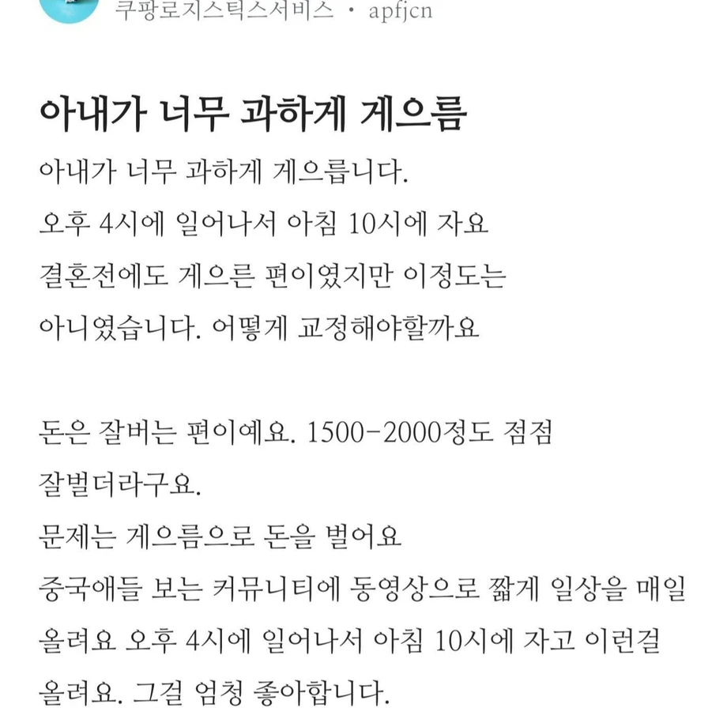
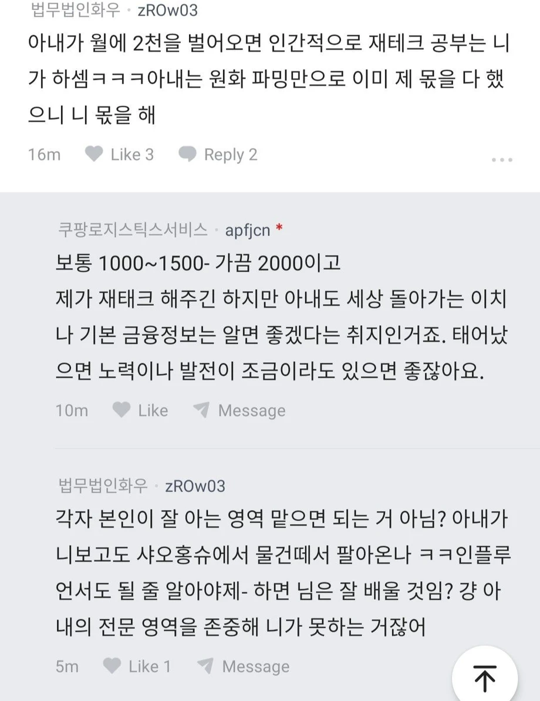

게으른게 아니라 밤낮이 바뀐거 아님?


게으른게 아니라 밤낮이 바뀐거 아님?
시비가 아니라 시차로 어디 적혀있음?
중국 스트리밍 방송해서 돈번다는거 아님?
시차로 돈번다는 내용이 어딨는거임 ? 보통 오후 저녁 새벽대에 뷰 수가 높은데 뭐만하면 주작 이ㅈㄹ이네 ㅋㅋ
원래 저 시간대에 방송이 잘팔림
중국은 인터넷방송bi 개 존나 포화상태라 걔네들도 별 지랄 다해도 많이 못버는데 뭔 한국인이 처자고 뒹굴거리는걸 올려서 2000이야ㅋㅋ
게다가 중국에서 인플루언서 bj하려면 걔네언어 필수로 할줄 알아야됨
한국인이 넘보기 쉬운 그런 영역이 아님
개 소 리 왈 왈
븅신같네
비틱질
배달하다 번뜩 든 망상인가
중국이 우리랑 시차가 저리난다고? 주작